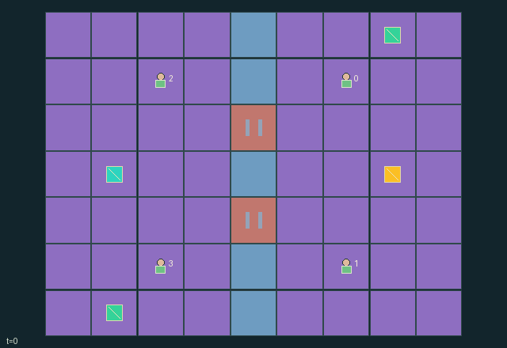

GI085 · Cipher Causeway

Original recording scope: 原回放视角 · Mode: 固定脚本演示
Additional generated state replay (different trajectory / full-state debug)

Runners recover cipher and carry it to exact exit tile; wardens seek both runners restrained first. Extraction pays each runner +1 and each warden -1; both-captured reverses rewards. Unresolved horizon pays zero.
Identity and original contract
4 independently actionable roles; 10 discrete commands per role; 154 native observation columns per role; original horizon 96 steps. Declared per-step reward range: -1 to 1. Observation regime: partially_observable.
Source SHA-256: 600fbe762c0281fb92813bee6baabf6f3219ad1be84c1abd4346bd1b0de72ca1
The objective, rewards, population, map and horizon remain original. A preview is not a success claim.
Objective and gameplay
Runners recover cipher and carry it to exact exit tile; wardens seek both runners restrained first. Extraction pays each runner +1 and each warden -1; both-captured reverses rewards. Unresolved horizon pays zero.
Opposed gate control, shared batteries, cipher dropping on tag, adjacent partner rescue, disclosed sensing relays, cloaks and scanners alter route feasibility, information and future interception.
- Courier and engineer must bring cipher to exact west exit. Wardens seek both runners restrained.
- Either runner can carry. An adjacent warden tag restrains and drops carried cipher in place.
- A free adjacent runner choosing rescue can release its partner after tags resolve that tick.
- Runner gate work opens five ticks; courier pays two cells and engineer one. Warden pays one to lock.
- An occupied gate stays open until vacated, preventing a closing wall from trapping a body.
- Cloaks hide nearby runners from nonadjacent wardens. Scanners reveal through cloaks and share radius-four agent sensing.
- Live flares relay radius-three agent sensing to teammates but disclose emitter position to all roles.
- Shared cells fund gates and devices. Either team may recover either two-cell cache.
- Restrained roles keep no-op only. Natural extraction or both-captured ends; otherwise step 96 truncates.
Ending: Extraction or both runners captured after rescue resolution ends naturally. Otherwise horizon 96, with natural priority. Terminal calls absorb preserving state and returning zero reward.
What this game explores
Information, sensing & communication: Who knows a fact, when it was measured, and whether it was communicated are separate state variables. Test memory or communication using only the same role-visible evidence.
Joint transport & shared access: Positions, load geometry, occupancy and persistent access constrain whose action can succeed next. Distinguish physical handoff, shared controls and simultaneous force from a cosmetic cooperation label.
Survival, protection & rescue: Protection and repair alter another role's future feasible actions. Record losses, exposure, rescue and infrastructure as well as delivery; survival is determined by the actual kernel.
Team opposition & interception: Cooperation within a team can coexist with opposition between teams. Preserve team membership, capture and possession rules, and report each team's outcomes instead of assuming a single shared return.
These are questions supported by rule structure, not observed learning effects.
Play it: operating walkthrough
crucibles play --game gi085Keep Python running and open its printed address. Select this game, set a seed and press Create session. The game itself is always English.
Assign a role range to Host with Assign / take over, or Assign all roles. Invite a second participant with Create player invitation, then assign a disjoint subset. Every original role is available.
For every owned role choose a legal command and press Queue. Arrow keys / WASD queue a declared directional action for the current role camera when available. Space or Advance one joint step advances everyone together. Non-directional games use the selectors.
Unqueued roles use the labelled untrained uniform-legal policy. Take over or release roles before the next step without resetting. Full-state debug is privileged and permanently logged; role cameras preserve permissions. Close the session to retain logs. Server restart does not restore sessions.
Complete command reference
IDs and English labels exactly match the manifest. Availability depends on role, resources, location and phase. An available action can still have no productive effect.
0·Wait
1·Move north
2·Move east
3·Move south
4·Move west
5·Runner picks adjacent cipher; warden tags adjacent unrestrained runner
6·Runner opens nearest adjacent gate for five ticks; warden locks it
7·Emit three-tick public live flare and share radius-three agent sensing with teammates
8·Spend shared cell to deploy four-tick cloak buoy for runner or scanner for warden
9·Runner frees adjacent captured teammate first; otherwise recover adjacent battery cache
Roles and capability identifiers
These original role names describe capabilities, not interchangeable skins. Check each owned role's legal selector before planning handoffs.
agent_0·Courier: radius-two sensor, two-cell opening
agent_1·Route engineer: radius-three sensor, one-cell opening
agent_2·North warden: radius-three sensor and tagging
agent_3·South warden: radius-three sensor and tagging
Information and observation permissions
Public static map, exit, active devices/flares, clock and extraction status. Manhattan sensors through walls: courier radius 2, others 3. Friendly flares relay radius-three agent sensing and expose emitter to opponents. Cloaks hide nearby runners beyond adjacency; live flare or scanner overrides. Wardens share scanner radius 4. Carried cipher follows carrier visibility; grounded cipher, gates and caches use direct local range. Own-team energy only. Scene events exclude private capture and remote gate changes.
The GIF is full-state debug and may reveal hidden entities or private state. Train on obs[agent], not the picture, state tree or another role's private row. Field slices and visibility are in the original manifest.
Reinforcement-learning integration
import jax
from crucibles_jaxmarl import make
env = make("gi085")
key = jax.random.PRNGKey(0)
key, rk, ak, sk = jax.random.split(key, 4)
obs, state = jax.jit(env.reset)(rk)
actions = env.sample_actions(ak, state)
obs, state, rewards, dones, info = jax.jit(env.step_env)(sk, state, actions)
done = dones["__all__"]Observations are float32 vectors of width 154; actions are scalar int32; masks have 10 entries. Supply all 4 roles each transition. Masked sampling is an engineering reference, not a trained learner.
step_env retains terminal data without reset. step performs outer autoreset and keeps terminal data in info["raw_state"] and info["raw_observation"]. Use dones["__all__"] for episode boundaries; separate completion, failure and time limit in analysis.
JIT or vmap equal identities and shapes. Split independent reset, policy and transition keys. Group different shapes explicitly; do not shrink the population or horizon. Host rendering stays outside training.
Training questions and fair evaluation
Define valid completion from the objective before fitting. Preserve original rewards and also report real deliveries/services, losses, resource state, unresolved episodes and per-role returns. Animation is not a reward signal.
Who knows a fact, when it was measured, and whether it was communicated are separate state variables. Test memory or communication using only the same role-visible evidence.
Positions, load geometry, occupancy and persistent access constrain whose action can succeed next. Distinguish physical handoff, shared controls and simultaneous force from a cosmetic cooperation label.
Protection and repair alter another role's future feasible actions. Record losses, exposure, rescue and infrastructure as well as delivery; survival is determined by the actual kernel.
Cooperation within a team can coexist with opposition between teams. Preserve team membership, capture and possession rules, and report each team's outcomes instead of assuming a single shared return.
Compare memory, communication or centralized critics under matched actor information. Declare critic access; keep actor inputs role-filtered. Match partner/opponent distributions, masks, compute and checkpoint selection. Final tests never enter fitting or selection.
Independent training runs or source-pairing blocks are inferential units; episodes from one policy are not independent training replications. Save hashes, keys, versions, device, time and cost. Negative, zero, failed and indeterminate outcomes are valid. No trained checkpoint or target score is supplied.
Classification and evidence
Overlapping editorial labels are reading aids, not proof of novelty, difficulty, strategic equivalence or learning effects.
- Information, sensing & communication
- Evidence
manifest.task.objective: Runners recover cipher and carry it to exact exit tile; wardens seek both runners restrained first. Extraction pays each runner +1 and each warden -1; both-captured reverses rewards. Unresolved horizon pays zero.
- Evidence
manifest.task.interaction: Opposed gate control, shared batteries, cipher dropping on tag, adjacent partner rescue, disclosed sensing relays, cloaks and scanners alter route feasibility, information and future interception.
- Evidence
manifest.task.observation_access: Public static map, exit, active devices/flares, clock and extraction status. Manhattan sensors through walls: courier radius 2, others 3. Friendly flares relay radius-three agent sensing and expose emitter to opponents. Cloaks hide nearby runners beyond adjacency; live flare or scanner overrides. Wardens share scanner radius 4. Carried cipher follows carrier visibility; grounded cipher, gates and caches use direct local range. Own-team energy only. Scene events exclude private capture and remote gate changes.
- Joint transport & shared access
- Evidence
manifest.task.objective: Runners recover cipher and carry it to exact exit tile; wardens seek both runners restrained first. Extraction pays each runner +1 and each warden -1; both-captured reverses rewards. Unresolved horizon pays zero.
- Evidence
manifest.task.interaction: Opposed gate control, shared batteries, cipher dropping on tag, adjacent partner rescue, disclosed sensing relays, cloaks and scanners alter route feasibility, information and future interception.
- Evidence
manifest.task.observation_access: Public static map, exit, active devices/flares, clock and extraction status. Manhattan sensors through walls: courier radius 2, others 3. Friendly flares relay radius-three agent sensing and expose emitter to opponents. Cloaks hide nearby runners beyond adjacency; live flare or scanner overrides. Wardens share scanner radius 4. Carried cipher follows carrier visibility; grounded cipher, gates and caches use direct local range. Own-team energy only. Scene events exclude private capture and remote gate changes.
- Survival, protection & rescue
- Evidence
manifest.task.interaction: Opposed gate control, shared batteries, cipher dropping on tag, adjacent partner rescue, disclosed sensing relays, cloaks and scanners alter route feasibility, information and future interception.
- Evidence
scene.rules.2: A free adjacent runner choosing rescue can release its partner after tags resolve that tick.
- Team opposition & interception
- Evidence
manifest.task.objective: Runners recover cipher and carry it to exact exit tile; wardens seek both runners restrained first. Extraction pays each runner +1 and each warden -1; both-captured reverses rewards. Unresolved horizon pays zero.
- Evidence
manifest.task.interaction: Opposed gate control, shared batteries, cipher dropping on tag, adjacent partner rescue, disclosed sensing relays, cloaks and scanners alter route feasibility, information and future interception.
- Evidence
manifest.task.observation_access: Public static map, exit, active devices/flares, clock and extraction status. Manhattan sensors through walls: courier radius 2, others 3. Friendly flares relay radius-three agent sensing and expose emitter to opponents. Cloaks hide nearby runners beyond adjacency; live flare or scanner overrides. Wardens share scanner radius 4. Carried cipher follows carrier visibility; grounded cipher, gates and caches use direct local range. Own-team energy only. Scene events exclude private capture and remote gate changes.
Source, receipts and preview limits
The additional generated state GIF replays saved untrained legal actions through the original kernel. At most 25 actual endpoints include initial and terminal state; no invented interpolation. It is full-state debug, not the role observation. Where an original scene preview exists, it is displayed first with its own recorded information scope. The two recordings may use different trajectories and views.
Original source, observation slices, manifest and mechanism
Native receipt · Presentation receipt
Engineering passes do not establish learning. Nonzero floating differences remain recorded and undetermined; no new tolerance was introduced. Human scores remain unverified.